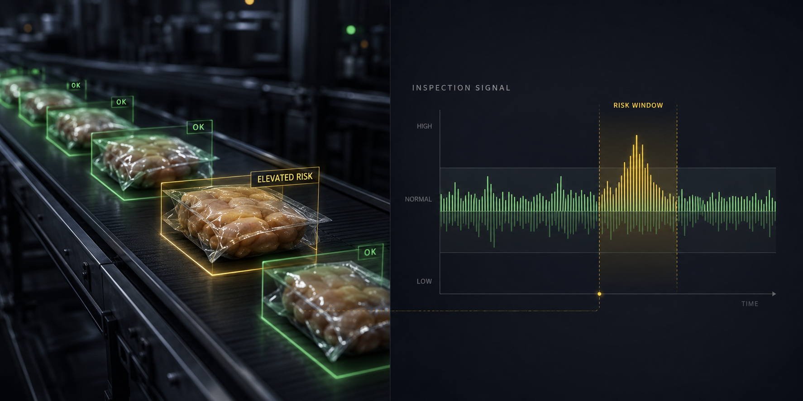

Hold and release review
Review the images and events around a concern so product disposition can be based on evidence, not just a single reject count.
Beyond Rejects
Beyond Rejects extends GreyscaleAI Insights beyond pass/fail counts by connecting X-ray image evidence, AI signal patterns, and production context around elevated-risk moments.
Production risk intelligence
A reject tells the team one package was removed. It does not always explain whether the event was isolated, whether signals were building, or whether nearby passing product deserves QA review.
Beyond Rejects helps teams review the period around an inspection event, using image history, signal behavior, line context, and supporting alerts to decide what should happen next.

The workflow pairs package-level inspection context with a time-based signal view so QA can review what happened around an event.
How it works
Beyond Rejects uses the same connected platform story: machine capture, AI image analysis, Insights visibility, and managed support. The difference is the question it helps answer.
High-resolution X-ray inspection captures images and machine metadata at line speed.
AI and analytics help surface unusual clusters, weak signals, and changes around reject events.
Insights gives authorized users a practical window of images, events, and line context to investigate.
Teams can review evidence before deciding whether to hold, rework, reinspect, release, or escalate.
QA decisions
Review the images and events around a concern so product disposition can be based on evidence, not just a single reject count.
Use the timing and shape of a signal window to help decide what period may need additional review.
Compare recurring issues by SKU, shift, line, or operating condition when the required metadata is available.
Passing product can still contain useful inspection signal. Beyond Rejects helps make that context visible for review.
QA, plant management, and operations can work from shared images, alerts, and event history.
Keep searchable inspection records tied to the event, supporting later review and continuous improvement.
Risk review queue
Where it fits
Beyond Rejects is part of the broader GreyscaleAI platform, not a separate inspection machine. It builds on image history, alerting, production analytics, machine visibility, and the standard support model.
Fit depends on the product, package, target concern, line setup, image quality, and the operating context available in Insights.